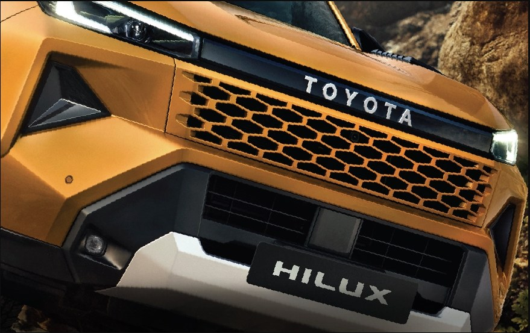
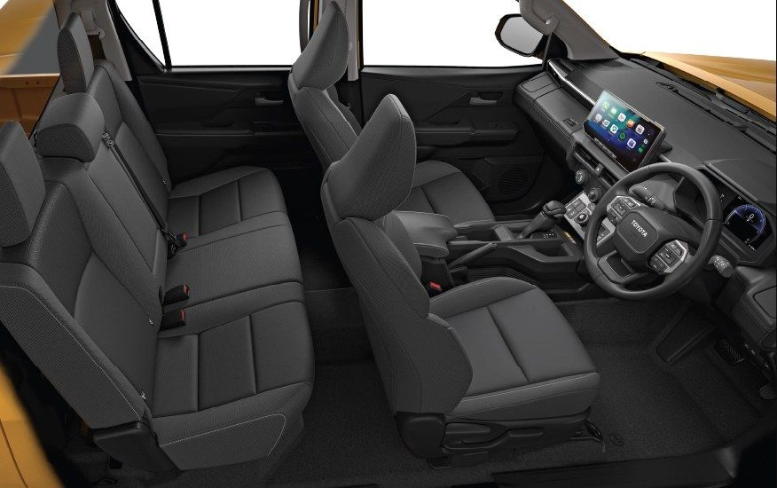
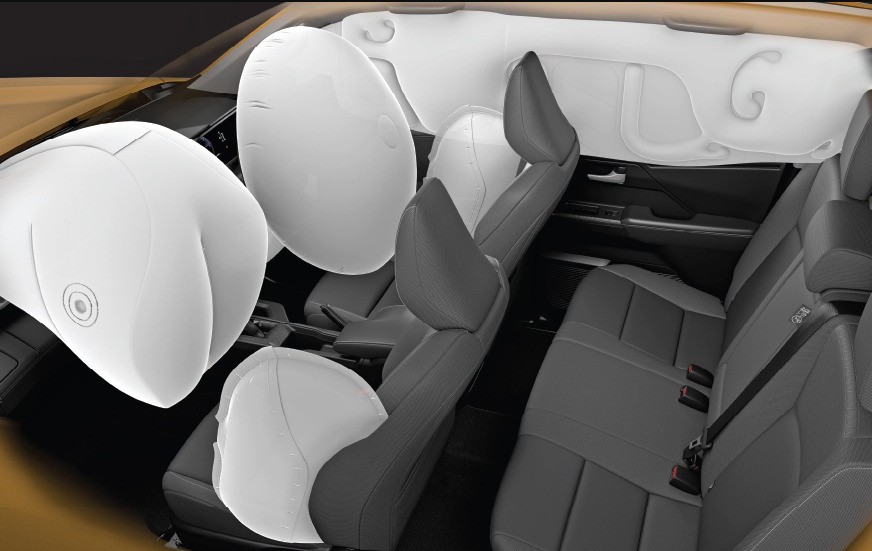
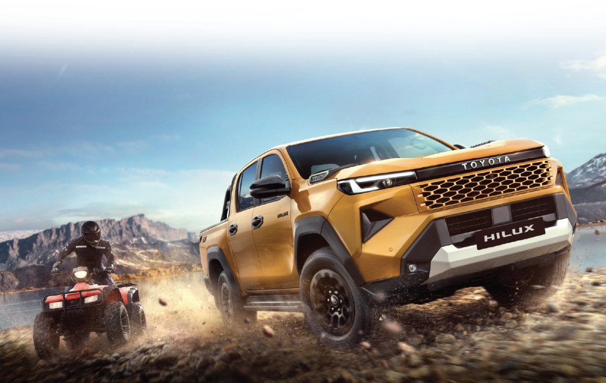
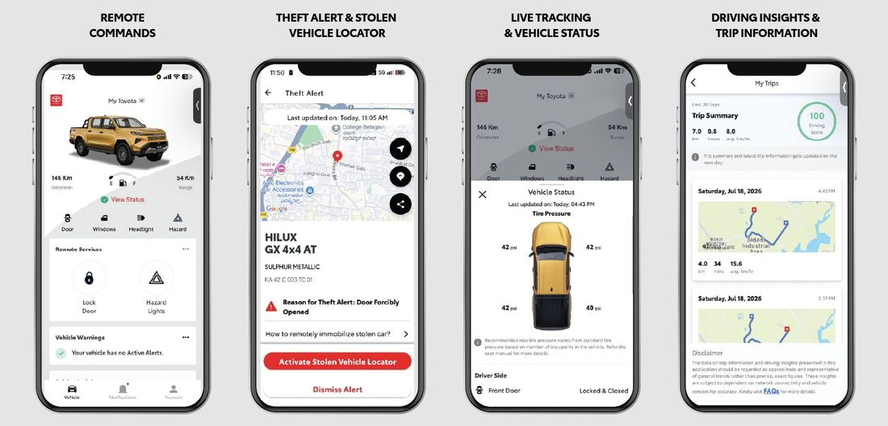
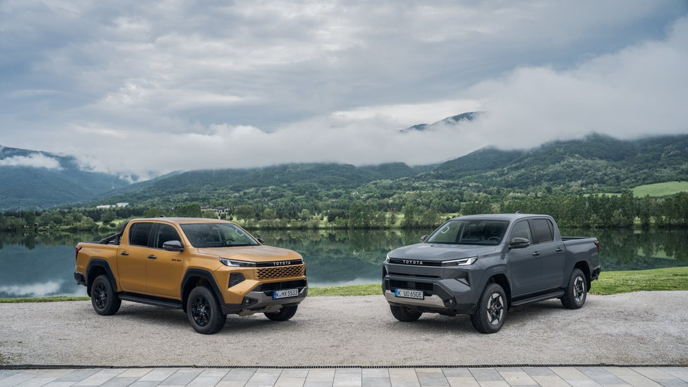

Isuzu V-Cross 2026: Pickup Practicality, 4WD and Which Variant
By Gagan Mishra

Toyota launched the ninth-generation Hilux in India on 28 July 2026. It keeps the same tough ladder frame and 2.8-litre diesel, now with a stiffer chassis, a much edgier look and, for the first time, a cheaper 4x2 version. It is still a working truck first, and the equipment list shows it.
This review uses Toyota’s published specifications, current listed prices and Autocar India’s drive, not our own test. Prices and specifications were checked on 21 November 2026. See our Review Methodology for how we separate editorial assessment from measured testing.
As a tough, capable 4x4 that will outlast almost anything, the Hilux is still the benchmark, and the engine is now properly refined. As a lifestyle vehicle it disappoints. The cabin lacks automatic climate control and powered seats, and the ride is bouncy when the bed is empty. Buy the VX 4x4 if you will use its ability; buy an SUV if you won’t.
| Trim | Drive | Ex-Showroom Price |
|---|---|---|
| GX | 4x2 | ₹31.99 lakh |
| GX | 4x4 | ₹33.69 lakh |
| VX | 4x4 | ₹36.69 – 36.89 lakh |
There is one engine and one gearbox: the manual has gone. The new GX 4x2 is the cheapest Hilux Toyota has sold in India, while the top VX costs the same as before. Autocar India recommends the VX 4x4, because the GX misses many convenience features at this price, and the 4x4 system is the point of buying a Hilux. We agree. If you don’t need four-wheel drive, a pickup is the wrong choice.
The new Hilux is all sharp angles. Toyota calls the design theme “Cyber Sumo”, with a honeycomb grille, LED headlamps and a squat, wide stance. Side and rear bed steps make the high load bed easier to reach, and the tailgate has a damped release. The VX adds LED running lights, fog lamps and tail-lamps, wheel-arch cladding and puddle lamps. It is a very large vehicle, which is part of its appeal and part of its daily challenge.

The dashboard borrows design ideas from the Land Cruiser Prado, but Autocar India found the cabin utilitarian rather than premium. Rear legroom is adequate, and the reprofiled seats recline a little more than before, though the backrests are still more upright than an SUV’s. Every Hilux has an all-black interior with fabric seats.
The load bed takes camping gear and tools easily but sits high off the ground. Toyota has not yet disclosed the payload; Autocar India expects it to stay at the previous 470 kg.

Seven airbags and vehicle stability control are standard. The GX has manual air-conditioning, an 8-inch touchscreen with wired Android Auto and Apple CarPlay, and a rear camera. The VX adds a 12.3-inch touchscreen with wireless phone connection, a wireless charger, eight speakers, cruise control, keyless entry, drive modes, connected-car tech, tyre-pressure monitoring and a 360-degree camera, though Autocar India found the camera’s resolution poor.
What is missing matters at this price. Autocar India reports that even the VX has no automatic climate control, no powered or ventilated seats and no rear defogger.

The 2.8-litre diesel carries over, with new mounts. Autocar India found it extremely refined, with low noise and vibration, and strong performance in all three drive modes.
| Engine | Power / Torque | Transmission Options |
|---|---|---|
| 2.8L Diesel (4-cyl) | 150 kW (204 PS) / 500 Nm | 6-speed Automatic; 4x2 or 4x4 with low range |
The 4x4 versions have high and low range and an electronic rear differential lock, and the VX 4x4 adds hill-descent control and terrain modes. Autocar India found the truck confident and sure-footed on a rocky forest trail, which it managed easily.
Toyota has not published an ARAI fuel-economy figure for the new Hilux. CarWale’s real-world test returned 9.26 km/l in the city and 14.04 km/l on the highway, a 10.45 km/l average. The tank holds 80 litres.

This section draws on Toyota’s published specifications and Autocar India’s drive, not our own, in line with our Review Methodology. The new Hilux has not been crash-tested by Bharat NCAP or Global NCAP. The Australia-specification truck has a five-star ANCAP rating, but that test used a different specification, so it is not a rating for the Indian Hilux. Under the skin, the ladder frame has thicker side rails and the body has extra spot welds for greater rigidity.
On the road, Autocar India found the suspension soaks up large rocks and deep potholes but turns skittish and bouncy over small ruts, especially with the bed empty, and rear passengers feel it most. The steering is heavy at low speed, and the weight is obvious in corners. The VX’s connected-car app adds remote commands, theft alerts and live tracking.

Following our Review Methodology, we rate eight criteria on paper, using official specifications, prices and published test evidence rather than our own driving, then average them into a Spec Score.
| Criteria | Score |
|---|---|
| Design | 8.5 / 10 |
| Performance | 9.0 / 10 |
| Mileage Potential | 6.5 / 10 |
| Comfort | 7.0 / 10 |
| Features | 7.0 / 10 |
| Safety | 8.0 / 10 |
| Practicality | 7.0 / 10 |
| Value for Money | 8.0 / 10 |
| Spec Score (average) | 7.6 / 10 |
Design: A sharp, imposing new look on a truck of real presence.
Performance: A strong, now very refined diesel and genuine low-range 4x4 ability.
Mileage Potential: No ARAI figure; real-world tests point to about 10 km/l.
Comfort: Bouncy over small bumps when unladen, and heavy at low speed.
Features: Well equipped on the VX for a pickup, but no auto AC or powered seats.
Safety: Seven airbags and stability control standard, but no Indian crash test.
Practicality: A useful but high load bed and upright rear seats.
Value for Money: The cheaper 4x2 and an unchanged VX price help, but equipment is thin.
The ninth-generation Hilux is better where it always mattered: stiffer, more refined and just as unstoppable off the road. It is no closer to being a luxury SUV, and at this price the missing comfort features are hard to ignore. The VX 4x4 is the one to buy if you need a pickup’s bed and 4x4 ability. If you mainly want a tough-looking family car, a body-on-frame SUV will be more comfortable and better equipped. Its only direct rival here is the Isuzu D-Max V-Cross.

What is the price of the new Toyota Hilux?
It launched at ₹31.99 lakh (GX 4x2) to ₹36.69 lakh (VX 4x4), ex-showroom. CarWale lists the VX up to ₹36.89 lakh in November 2026.
Is the 2026 Hilux a new generation?
Yes. It is the ninth-generation Hilux, on an updated version of the same IMV platform, with a stiffer frame and the same 2.8-litre diesel.
Does the new Hilux come with a manual gearbox?
No. The 6-speed automatic is the only gearbox.
Is there a 4x2 Hilux?
Yes, for the first time in India. The GX is offered as 4x2 or 4x4; the VX is 4x4 only.
What is the Hilux safety rating?
The Indian Hilux has not been tested by Bharat NCAP or Global NCAP. Seven airbags and stability control are standard.
What mileage does the Hilux give?
Toyota has not published an ARAI figure. CarWale’s real-world test averaged 10.45 km/l.
Links checked 21 November 2026. Driving impressions and fuel tests are from the publications named in the text. We have not driven this vehicle.
By Gagan Mishra

By Gagan Mishra

By Gagan Mishra